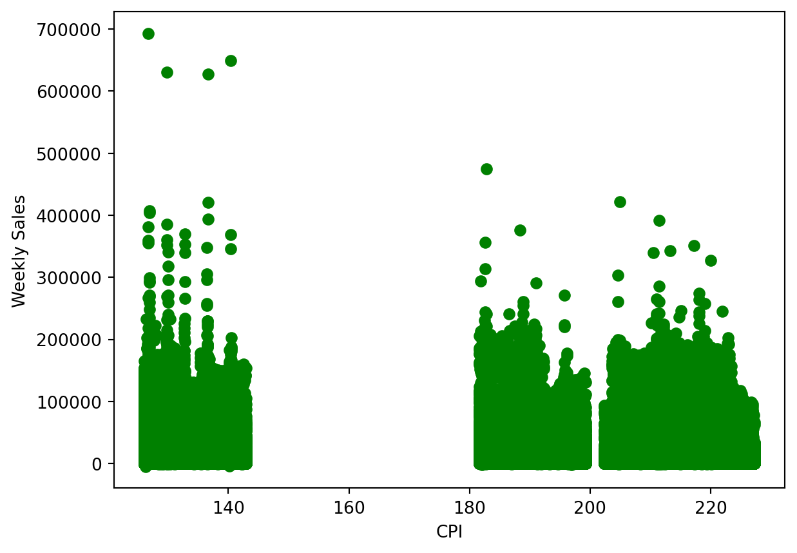
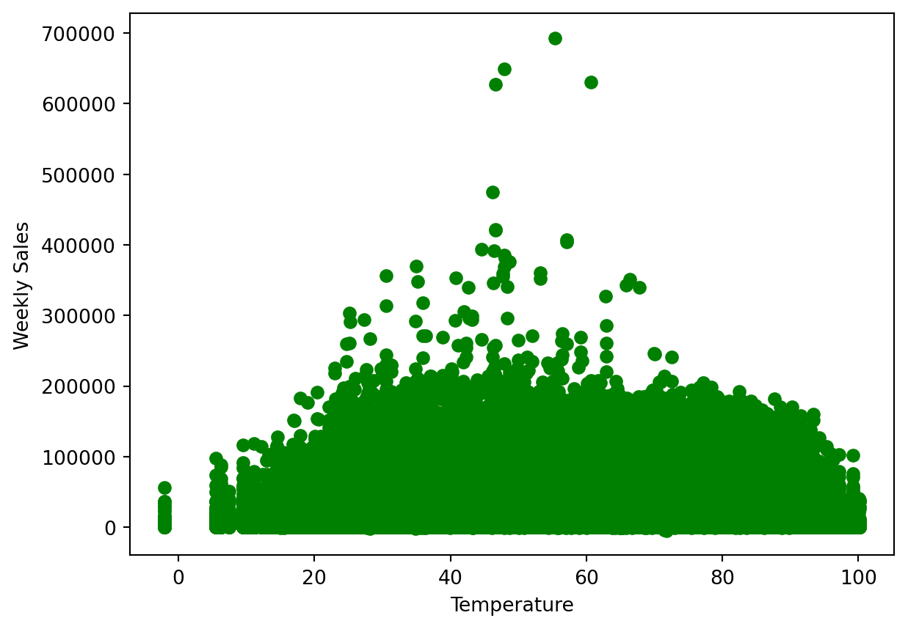
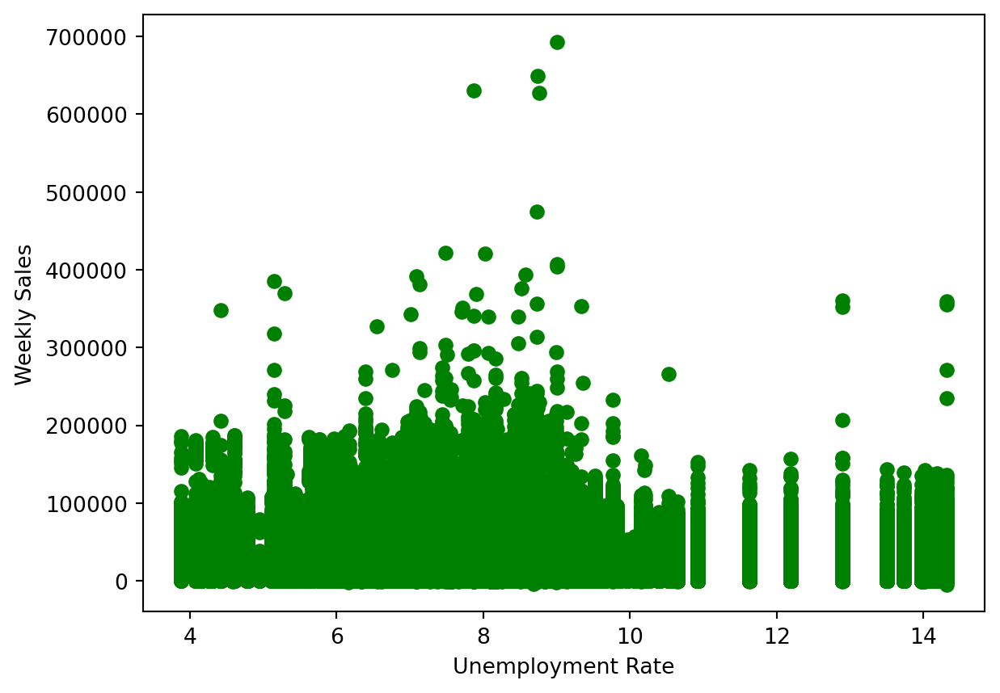
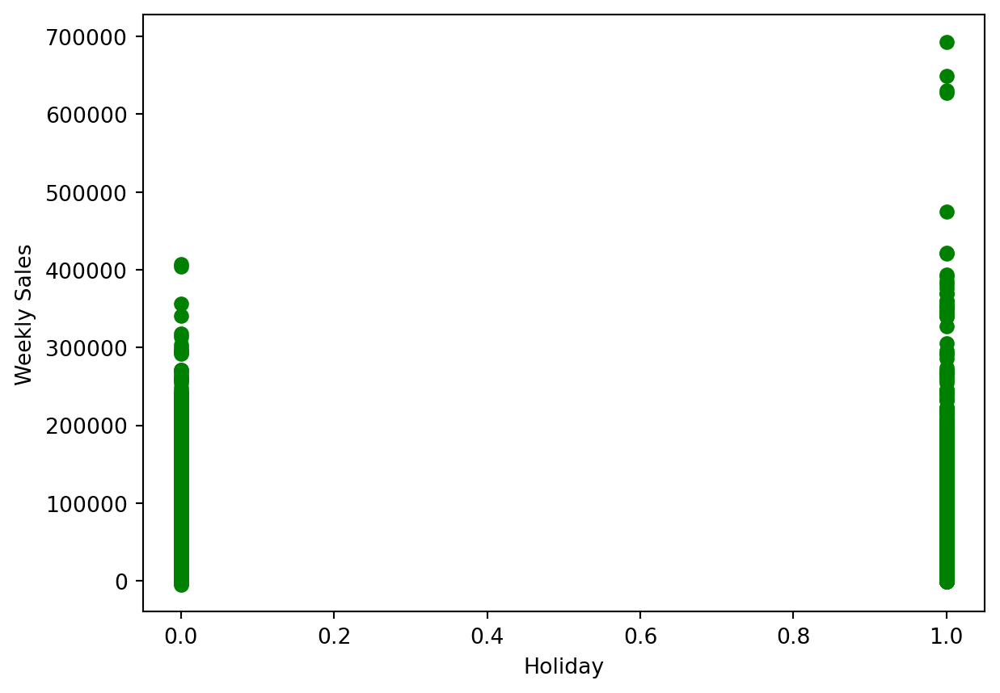

import sys
#Project requires Python 3.7 or above
assert sys.version_info >= (3, 7)
# Import libraries
import pandas as pd
import numpy as np
import matplotlib.pyplot as plt
from sklearn.model_selection import train_test_split
from sklearn.linear_model import LinearRegression
from sklearn.cluster import DBSCAN
from sklearn.metrics import mean_squared_errorBackground
This blog post will explore how to find and detect anomalies in data sets. The data set that is used for this is a Walmart data set that provides store and sales information. The goal will be to detect outliers and whether they exist, and how to handle them.
Setup
We will first begin by checking our python version and importing the necessary libraries for this. We will use Pandas to read the csv file and manipulate its data, and matplotlib’s pyplot to display graphs and plot our data. Numpy will also be used for some array manipulation. Scikit learn (sklearn) libraries will also be imported for its metrics and models. We will use the metrics to see how accurate the model is and find the error it produces. The model libraries will be used to build the Linear Regression and also split the data.
Exploring the Data
Let’s start by seeing what our data looks like.
# Read data
data = pd.read_csv('walmart-data.csv')
print(data.shape)
data.head()(421570, 17)| Unnamed: 0 | Store | Date | IsHoliday | Dept | Weekly_Sales | Temperature | Fuel_Price | MarkDown1 | MarkDown2 | MarkDown3 | MarkDown4 | MarkDown5 | CPI | Unemployment | Type | Size | |
|---|---|---|---|---|---|---|---|---|---|---|---|---|---|---|---|---|---|
| 0 | 0 | 1 | 2010-02-05 | 0 | 1.0 | 24924.50 | 42.31 | 2.572 | 0.0 | 0.0 | 0.0 | 0.0 | 0.0 | 211.096358 | 8.106 | 3 | 151315 |
| 1 | 1 | 1 | 2010-02-05 | 0 | 26.0 | 11737.12 | 42.31 | 2.572 | 0.0 | 0.0 | 0.0 | 0.0 | 0.0 | 211.096358 | 8.106 | 3 | 151315 |
| 2 | 2 | 1 | 2010-02-05 | 0 | 17.0 | 13223.76 | 42.31 | 2.572 | 0.0 | 0.0 | 0.0 | 0.0 | 0.0 | 211.096358 | 8.106 | 3 | 151315 |
| 3 | 3 | 1 | 2010-02-05 | 0 | 45.0 | 37.44 | 42.31 | 2.572 | 0.0 | 0.0 | 0.0 | 0.0 | 0.0 | 211.096358 | 8.106 | 3 | 151315 |
| 4 | 4 | 1 | 2010-02-05 | 0 | 28.0 | 1085.29 | 42.31 | 2.572 | 0.0 | 0.0 | 0.0 | 0.0 | 0.0 | 211.096358 | 8.106 | 3 | 151315 |
The dimensions of the data is (421570, 17). There were 16 main categories provided that gave information on Walmart. There are 421,570 data entries, so there is a lot of data that can be utilized. We want to see what really drives weekly sales, so that will be what to compare against for each other category.
Plotting the Data
Let’s plot the data to visualize what the distributions look like and see if we can draw any initial inferences from what we see. By looking at the plotted data, sometimes it can be fairly clear if outliers do exist.
First, let’s look at how CPI (consumer price index) at the time affects the weekly sales.
plt.xlabel('CPI')
plt.ylabel('Weekly Sales')
plt.scatter(data['CPI'], data['Weekly_Sales'], color='g')<matplotlib.collections.PathCollection at 0x12384c910>
There do appear to be some outliers we can see immediately. The data point at the top left of the plot do not fit with the other clusters of data present. Generally all the points in to 0 to 140 range remain below 400,000, with the excpetion of the few way above.
Now let’s look at the temperature on the days of sales and whether that plays a role in how weekly sales are affected.
plt.xlabel('Temperature')
plt.ylabel('Weekly Sales')
plt.scatter(data['Temperature'], data['Weekly_Sales'], color='g')<matplotlib.collections.PathCollection at 0x1238da250>
Generally, the temperature does not make too big of a difference, and normal days do have better sales than those with temperatures that are too cold or too hot. The 40 to 60 degrees range is ideal, but in this range we do see some outliers that are significantly higher up than all other data points.
Let’s take a look at how the unemployment rate at the time affected the weekly sales.
plt.xlabel('Unemployment Rate')
plt.ylabel('Weekly Sales')
plt.scatter(data['Unemployment'], data['Weekly_Sales'], color='g')<matplotlib.collections.PathCollection at 0x1238e9ed0>
The range of between 7 to 10 percent unemployment where sales were the highest. Again however, in the 8 to 10 percent range there do appear to be a few outliers that exist much higher than all other data points.
Now let’s see how the holidays drive weekly sales. A holiday is represented by 1, and a non-holiday is represented by 0.
plt.xlabel('Holiday')
plt.ylabel('Weekly Sales')
plt.scatter(data['IsHoliday'], data['Weekly_Sales'], color='g')<matplotlib.collections.PathCollection at 0x1238cea90>
Holidays do seem to bring in more sales on average. For non-holidays, there do not really appear to be outliers, but for holidays there seems to be a few towards to upper end, but is it difficult to tell.
Prepare The Data
Now that we have a better understanding of what the data looks like and what we are searching for, we can begin our analysis on the data set and find outliers.
Let’s create the data set and drop the categories we do not need to take into account for this.
X = data[['IsHoliday', 'Dept', 'Weekly_Sales',
'Temperature', 'Fuel_Price', 'MarkDown1', 'MarkDown2', 'MarkDown3',
'MarkDown4', 'MarkDown5', 'CPI', 'Unemployment', 'Type', 'Size']]
X.head()| IsHoliday | Dept | Weekly_Sales | Temperature | Fuel_Price | MarkDown1 | MarkDown2 | MarkDown3 | MarkDown4 | MarkDown5 | CPI | Unemployment | Type | Size | |
|---|---|---|---|---|---|---|---|---|---|---|---|---|---|---|
| 0 | 0 | 1.0 | 24924.50 | 42.31 | 2.572 | 0.0 | 0.0 | 0.0 | 0.0 | 0.0 | 211.096358 | 8.106 | 3 | 151315 |
| 1 | 0 | 26.0 | 11737.12 | 42.31 | 2.572 | 0.0 | 0.0 | 0.0 | 0.0 | 0.0 | 211.096358 | 8.106 | 3 | 151315 |
| 2 | 0 | 17.0 | 13223.76 | 42.31 | 2.572 | 0.0 | 0.0 | 0.0 | 0.0 | 0.0 | 211.096358 | 8.106 | 3 | 151315 |
| 3 | 0 | 45.0 | 37.44 | 42.31 | 2.572 | 0.0 | 0.0 | 0.0 | 0.0 | 0.0 | 211.096358 | 8.106 | 3 | 151315 |
| 4 | 0 | 28.0 | 1085.29 | 42.31 | 2.572 | 0.0 | 0.0 | 0.0 | 0.0 | 0.0 | 211.096358 | 8.106 | 3 | 151315 |
DBSCAN - Outlier Detection
For detecting anomalies/outliers, we will use Density-Based Spatial Clustering, or DBSCAN, which will group data points based on their density. It will identify regions with high-density, and classify points with noise(meaningless/irrelevant data) as outliers.
To begin the DBSCAN, we have to note 2 parameters: eps and min samples. Eps, or Epsilon, is the maximum distance we will allow to exist between two data points for them to be considered neighbors. min samples, or minimum samples, which is the number of points needed within the radius for a point to determine number of clusters.
Because we know our data is widespread and can hold a big range, we will set our eps to 1000 and provide it a min_samples of 4.
# DBSCAN
dbscan = DBSCAN(eps = 1000, min_samples= 4)
dbscan.fit(X)
dbscan.labels_array([ 0, 0, 0, ..., 5893, 5893, 5893])Let’s see how many outliers the DBSCAN detected.
# Outlier count
labels = dbscan.labels_
arr = np.array(labels)
print("Number of Outliers: ", np.count_nonzero(arr == -1))
print("Percentage of Outliers: ", (sum(labels == -1) / X.shape[0]) * 100, "%")Number of Outliers: 38479
Percentage of Outliers: 9.127547026591076 %About 9 percent of the data in this data set is being classified as anomalies/outliers.
Let’s visualize how the data was clustered through a table.
X_copy = X.copy()
X_copy.loc[:, 'Cluster'] = dbscan.labels_
X_copy.groupby('Cluster').size().to_frame()| 0 | |
|---|---|
| Cluster | |
| -1 | 38479 |
| 0 | 6381 |
| 1 | 117 |
| 2 | 23 |
| 3 | 5 |
| ... | ... |
| 5892 | 7 |
| 5893 | 36 |
| 5894 | 6 |
| 5895 | 4 |
| 5896 | 5 |
5898 rows × 1 columns
This DBSCAN created almost 6000 clusters, and marked 38,479 as outliers. We can conclude that this data set does have several anomalies/outliers.